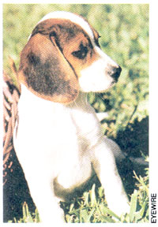

CountryLore
In my opinion, you can't beat the beagle as a top choice for your homestead. Beagles will guard your yard and garden from those shrubeating, lettuce-mooching, "wascally wabbits" and other critters. They have a loud and distinctive voice, making them a good choice to warn of visitors, whether friend or foe. They are clean dogs. Even though they shed, their coats are short and relatively low maintenance. Beagles are tolerant of other pets and enjoy the company of humans most of all. They are quite social animals.
Beagles are born hunters and will help you put delicious rabbit on the table. In England, they gained prominence during the days of Henry VIII. His daughter, Elizabeth I, often took beagles to the hunting field in baskets attached to the horses' saddles. Bred and developed mostly for rabbit hunting, these energetic little fireballs have proven themselves on practically every species of upland game, even pheasants.
Beagles require little care other than a good diet, plenty of fresh water, a yearly visit to the vet, occasional brushing and the companionship of their families. They crave affection and will respond with devotion.
GARY VOSHELL
Wadena, Iowa
|
 |
|
|